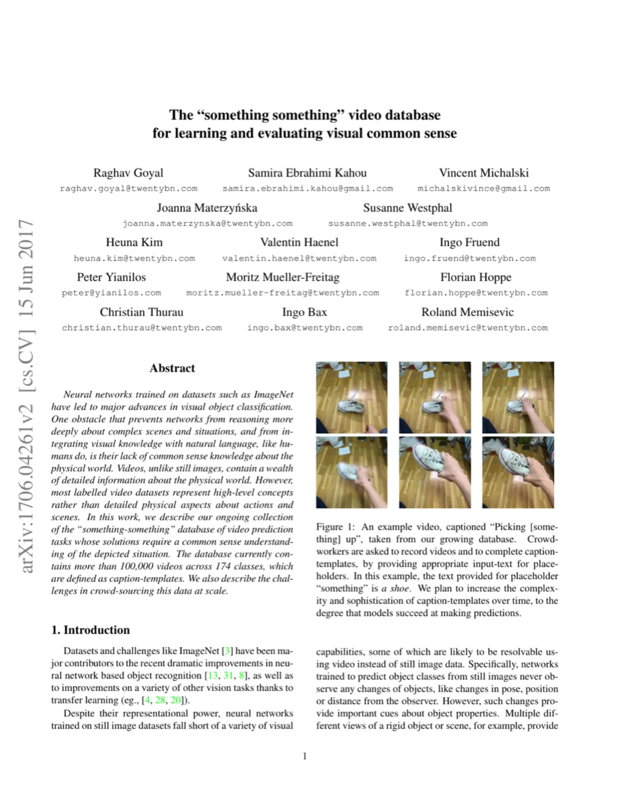
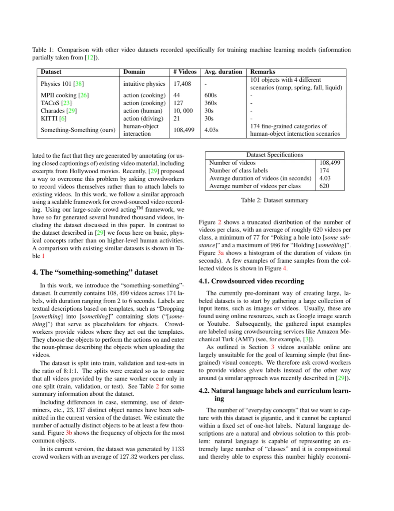
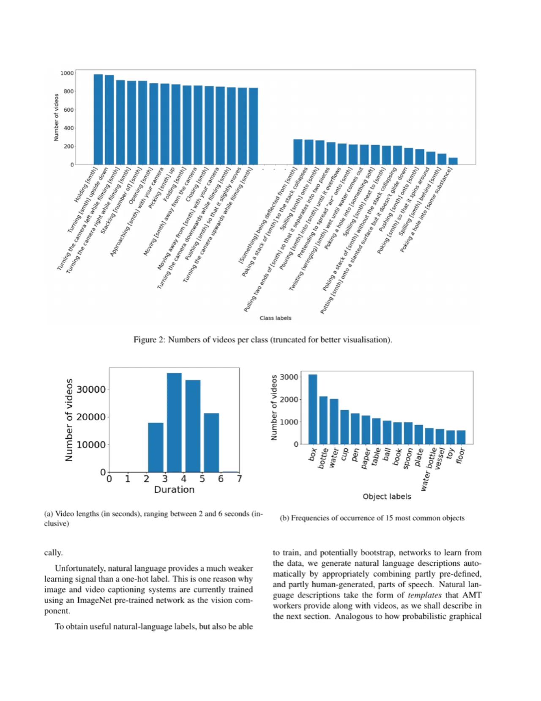
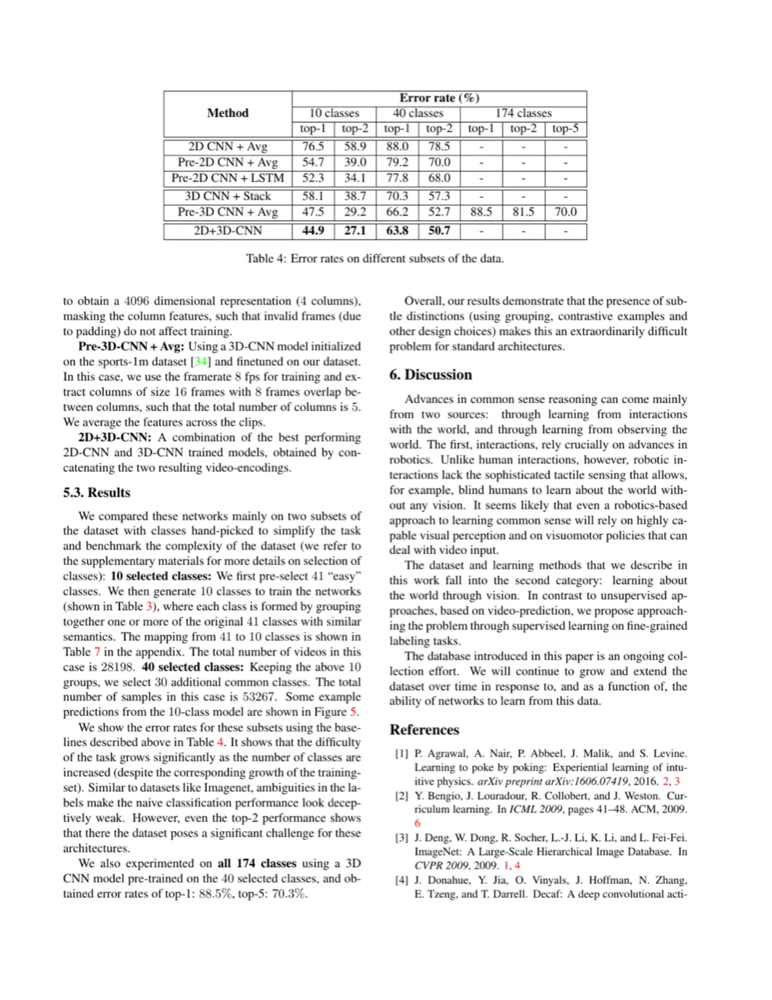
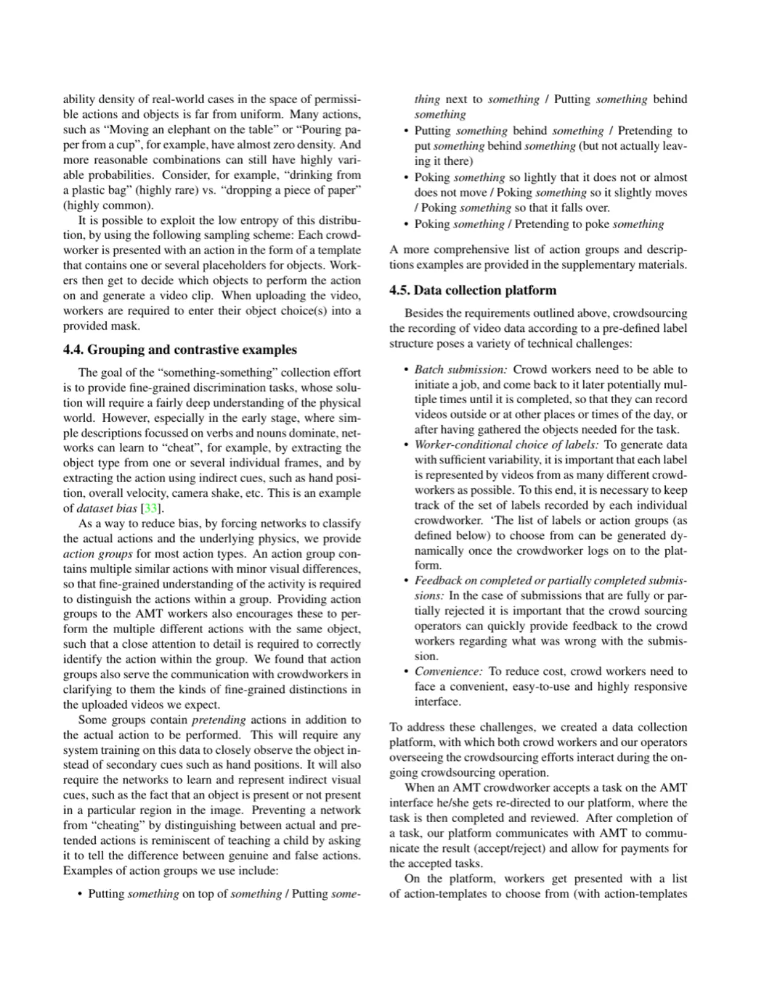

Something-Something 是一个大规模众包视频数据集，包含 108,499 条 2–6 秒的短视频、174 个动作类别，专注于捕捉人类与物体之间的细粒度物理交互，旨在推动视觉常识推理研究。与以往动作识别数据集不同，本数据集强迫模型学习物体属性、时序动态和直觉物理，而非依赖单帧特征或场景偏见。
现有大规模视频数据集（如 Sports-1M、ActivityNet）以高层动作识别为目标，使得模型可以依赖单帧特征或场景线索作弊，而无需真正理解物体的物理属性与因果关系。这一缺陷导致神经网络缺乏类似人类的"视觉常识"（visual common sense）。
"One obstacle that prevents networks from reasoning more deeply about complex scenes and situations, and from integrating visual knowledge with natural language, like humans do, is their lack of common sense knowledge about the physical world."

视频（而非静态图像）天然包含物体运动、形变、遮挡等信息，是学习直觉物理（intuitive physics）和空间关系的理想载体。作者认为，要真正学习"opening"这一概念，网络必须能跨越"opening a door"、"opening a zipper"、"opening a mouth"等不同场景进行泛化——而这正是 Something-Something 数据集的设计初衷：提供高度细粒度、专注于基础物理概念的视频-标签对。
与现有数据集的对比（Table 1）显示，Something-Something 视频数量（108,499）远超其他专注于物理交互的数据集（如 Physics 101：17,408），且视频更短（平均 4.03 秒），时序标注更精确。
Something-Something 数据集通过"大规模众包表演"（large-scale crowd acting）框架构建：不是从网上爬取视频再打标签，而是让众包工作者根据动作模板主动录制视频并填写占位词，从而确保视频内容与标签的高度一致性与时序对应。

标签采用含占位符（placeholder）的动作模板形式，如 "Dropping [something] into [something]"。工作者录制视频后需填写 "something" 对应的具体物体名词。当前版本共有 23,137 个不同的物体名称（含大小写、词形变化等），估计实际不同物体至少有几千个。这种标注方式兼具自然语言的表达力与结构化标签的可训练性，且支持"课程学习"（curriculum learning）——随着模型性能提升，逐步增加标签复杂度。
为减少数据集偏见、强迫网络区分细微动作差异，作者引入了动作分组机制：每个分组包含多个视觉上相近但语义有别的动作。例如：

作者为工作者专门开发了众包平台，支持批次提交、动态分配动作类别（维持类别平衡）、视频上传与回放、自动质量检查（视频长度、唯一性）以及人工审核流程。工作者在 Amazon Mechanical Turk（AMT）接受任务后被重定向至该平台，完成后系统自动与 AMT 通信完成支付。数据集按 8:1:1 分割为训练/验证/测试集，确保同一工作者的视频只出现在同一分割中。
作者在 10 类、40 类、174 类三个子集上分别评估了多种标准视频理解架构的误差率（error rate），以量化数据集的难度并为社区提供参考基准。
预处理：以 24 fps 采样帧，resize 到 84×84 像素（使用预训练模型时按对应分辨率），时域 Gaussian 低通滤波（variance=48 pixels），有效帧率为 6 fps。训练时随机时域增强（random temporal offset 0–4）。
测试了以下五种编码方法：
| 方法 | 10 类 top-1 (%) | 40 类 top-1 (%) | 174 类 top-1 (%) | 174 类 top-5 (%) |
|---|---|---|---|---|
| 2D CNN + Avg | 76.5 | 88.0 | — | — |
| Pre-2D CNN + Avg | 58.9 | 78.5 | — | — |
| Pre-2D CNN + LSTM | 54.7 | 79.2 | — | — |
| 3D CNN + Stack | 39.0 | 70.0 | — | — |
| Pre-3D CNN + Avg | 52.3 | 77.8 | — | — |
| 2D+3D-CNN（最优） | 34.1 | 68.0 | 88.5 | 70.3 |


实验结果揭示了若干重要现象：首先，3D-CNN 总体优于 2D-CNN，说明时序信息对本任务至关重要；其次，ImageNet 预训练的权重反而可能带来负迁移（Pre-2D-CNN 性能弱于从零训练的 2D-CNN on 10 classes），表明 Something-Something 所需特征与静态图像分类特征存在本质差异；第三，即便是最复杂的组合模型，在全部 174 类上 top-1 误差率仍达 88.5%，"这些细微区别（通过分组、对抗样本等设计选择）使这对标准架构而言成为一个极其困难的问题"（"makes this an extraordinarily difficult problem for standard architectures"）。
作者明确指出，当前数据集聚焦简单物理概念，"the level of complexity of the current version of the dataset may be viewed approximately as 'teaching a one-year-old child'"。更复杂的语言描述和高层概念被留给未来版本通过课程学习逐步引入。
作者指出 "a difficulty for both training and interpreting results is the presence of ambiguities in the labels"。即使是人类标注者，对部分细粒度类别也难以达成共识。论文建议使用 top-K 误差率来缓解这一问题，但并未根本解决。
基线实验将视频 resize 到 84×84 像素，这与真实部署场景相差甚远。更高分辨率与更复杂时序建模的实验效果留待后续工作。
作者明确表示 "The database introduced in this paper is an ongoing collection effort. We will continue to grow and extend the dataset over time"，论文中的数字（108,499 视频，174 类）仅代表当时状态，非最终版本。
从数据收集平台描述可以推断，尽管有自动质量检查（长度、唯一性），每份提交最终仍需人工操作员审核，随着规模扩大，这一流程的成本和效率将成为制约因素。